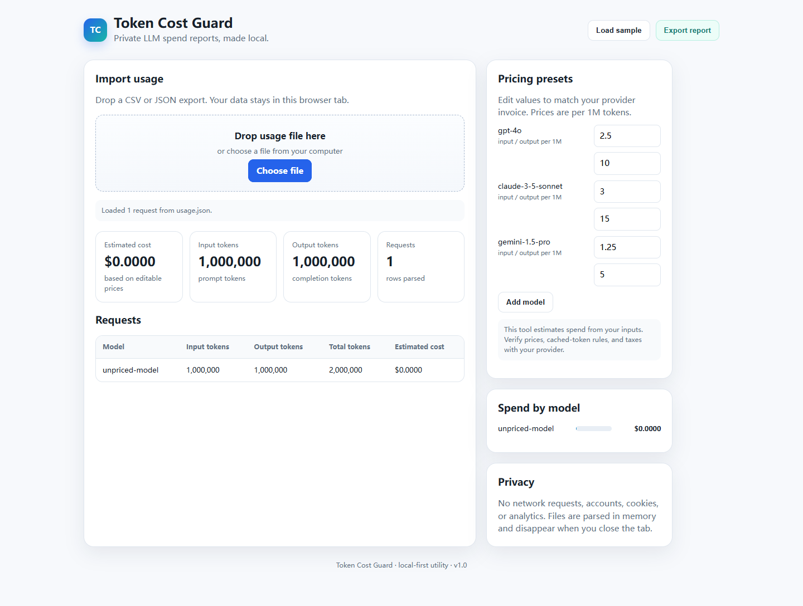
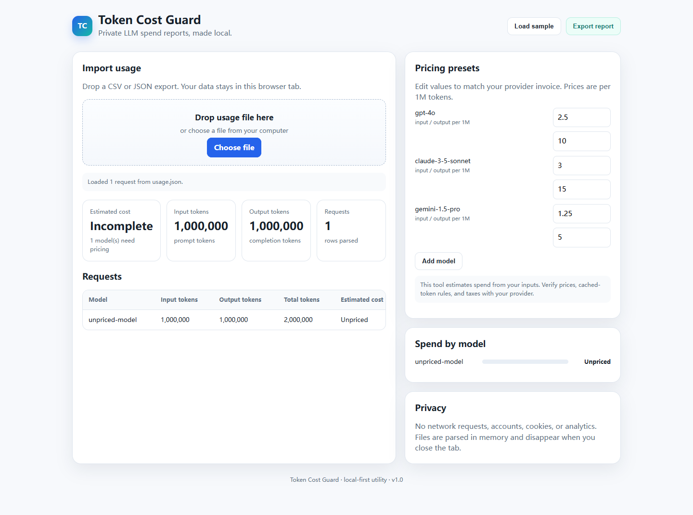

Executed QA sample · 2 November 2026
Find it. Reproduce it.
Verify the fix.
This covers our own Token Cost Guard project using synthetic data. It is an AI-assisted sample, not a client engagement, an independent audit, or a guarantee of defect-free software.
Environment: Chromium 156.0.8078.4 · Playwright 1.64.1 · Node v24.14.0 · Windows. Desktop: 1440 × 1000; mobile layout: 320 × 800. These are failing scenarios, not independent bug counts.
Before: 2026-11-02T13:14:09.752Z · After: 2026-11-02T13:14:27.593Z. Exact baseline HTML and executed outputs are preserved below.
Acceptance checks and evidence
| ID / severity | Reproduction and result | Before | After | Evidence |
|---|---|---|---|---|
| TC01 Control | Known-price sample exports the independently calculated $1.722 Load sample and export JSON. 344,000 input + 73,000 output tokens; $1.722 at the displayed illustrative rates. | PASS | PASS | Before After |
| TC02 High | Unknown model cost remains unknown in screen and export Import unpriced-model with 1,000,000 input/output tokens. Before: $0. After: incomplete estimate, null total and a named unpriced model. | FAIL | PASS | Before After |
| TC03 High | Negative token counts are rejected with an explanation Import input_tokens: -1000. Before: accepted and subtracted from cost. After: rejected with an explanation. | FAIL | PASS | Before After |
| TC04 High | Non-numeric token counts are rejected Import input_tokens: "invalid". Before: silently became zero. After: invalid count rejected. | FAIL | PASS | Before After |
| TC05 High | Malformed stored pricing does not break startup Set tcg-pricing to invalid JSON, reload, click Load sample. Before: startup script throws. After: usable default settings. | FAIL | PASS | Before After |
| TC06 Medium | CSV quoted newlines preserve request boundaries Import a CSV request ID with a quoted newline. Before: one request became two rows. After: one request and correct counts. | FAIL | PASS | Before After |
| TC07 High | Nested JSON usage preserves parent model Import a parent model with tokens nested under usage. Before: model lost, cost fell back to zero. After: inherited model; $0.0035 for 1,000/100 tokens. | FAIL | PASS | Before After |
| TC08 Medium | 320px viewport has no page-wide horizontal overflow Load sample at 320 x 800 pixels. Before: page-wide horizontal overflow. After: the page fits; the wide table scrolls inside its card. | FAIL | PASS | Before After |
| TC09 High | Landing page has no placeholder checkout link Inspect the main landing-page purchase link. Before: a checkout placeholder. After: explicit service inquiries, with no instant-purchase claim. | FAIL | PASS | Before After |
| TC10 Control | Usage content produces no external network requests Observe network requests during import and export. No external requests observed in these interactions. This is not an exhaustive privacy audit. | PASS | PASS | Before After |
| TC11 Medium | Model names cannot inject markup or poison aggregation Import __proto__, constructor and an HTML-shaped model name. After: model names remain text and totals remain unpriced. The baseline failed the null-total assertion; no baseline XSS execution is claimed. | FAIL | PASS | Before After |
| TC12 High | Adding a model requires explicit prices before costing Add a model, import usage, then explicitly set both rates to zero. Before: new model immediately treated as free. After: unknown until priced; explicit zero rates are valid. | FAIL | PASS | Before After |
| TC13 High | Clearing a price makes a previously costed report incomplete Load sample, clear the gpt-4o input price. Before: blank became a free rate. After: incomplete total and retained $0.507 known-model subtotal. | FAIL | PASS | Before After |
| TC14 Medium | Unterminated CSV quote is rejected Import CSV with an unclosed quote. Before: malformed data accepted. After: quote-specific error. | FAIL | PASS | Before After |
| TC15 Medium | Disabled storage still permits import and price editing Make localStorage throw SecurityError, then import and edit pricing. Before: startup throws. After: import and editing work in the current tab. | FAIL | PASS | Before After |


A visible example: unknown is not free


Reproduce the results
Clone the source repository. In its qa directory, install the pinned runner and Chromium. PowerShell commands:
npm ci --ignore-scripts
npx playwright install chromium
$env:QA_SITE_ROOT = (Resolve-Path ..).Path
node verify.mjs after
# Reproduce the original failing baseline:
New-Item -ItemType Directory evidence/before -Force
Copy-Item before/source evidence/before/source -Recurse
node verify.mjs beforeThe baseline run intentionally exits with status 1 because 13 checks fail. No API key or paid model is used.
Runner · Before JSON · After JSON · Archived baseline demo · Source repository
Limits
No Firefox, WebKit, physical-device, live billing, provider API or load tests were performed. Named CSV/JSON fixtures do not cover every vendor format. Rates are editable examples. Screenshots document rendering; exported JSON assertions verify calculations.